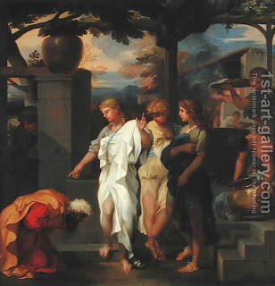

Bava Metzia 37 - A Thief Returns Stolen Money to Two People
If a thief told two people, "I stole one maneh ($5,000) from one of you, but I don't know from which of you I stole it," - or if a custodian told two people, "The father of one of you deposited a maneh with me, but I don't know which one he was" - he gives each one a maneh, because he acknowledged the claim himself.
Both cases describe going beyond the letter of the law. The thief wants to avoid Heavenly retribution, and the custodian feels at fault for not keeping the records.
Test your knowledge of the daf